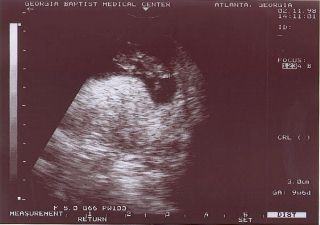
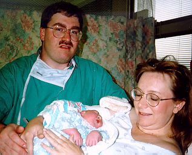

In Loving Memory of
Mary Elizabeth Karg
September 3, 1998 - September 4, 1998
We were excited when we found out about Patricia being pregnant again - we had had a miscarriage during a prior pregnancy. We were also in the midst of raising Joshua, a strong willed two year old. Since Joshua was taken via c-section at 37 weeks due to Patricia's toxemia and also because of the miscarriage, Patricia was watched by her doctor very carefully. We were able to agree on names for the baby early - Christopher Thomas or Mary Elizabeth.
The baby was due on September 9, 1998. About 18 weeks into the pregnancy, the doctor did an AFP test, and the result came back abnormal. The doctor explained that there are two reasons for this. Either the due date is miscalculated or the baby could have a neural tube defect. She sent us to have an ultrasound to verify the due date.
The ultrasound took place on April 15, 1998. I went with Patricia and Joshua, and we looked forward to early glimpses of our baby. Patricia wanted to know the babies sex, but I did not. However, we were not expecting the doctor to inform us that the baby had anencephaly. It was quite a shock.
We asked the doctor what to do next. He said that most people terminate the pregnancy, because they consider the baby to be non-viable. However, we knew that there was a life in there, and knew that we should give her every chance to live. When we discussed this with our doctor, she agreed and also arranged for a second ultrasound.
Before the second ultrasound, we began researching anencephaly and neural tube defects, and praying that the first ultrasound was wrong. The internet served as a very useful tool for doing research. By the time the second ultrasound rolled around, we were knowledgeable about the subject. However, the second ultrasound revealed nothing new - the baby's brain had not formed. We still prayed for a miracle. The ultra sound did reveal that the baby was a girl. We could now pray for our Mary Elizabeth.
After the second ultrasound, our doctor informed us of our options, and we told her that we would continue the pregnancy to term. Our doctor told us that she would treat the pregnancy as a normal pregnancy, and would provide us with normal care, so that we would not feel different.
![[UltraSound at 22 Weeks]](images/baby2.jpg)
We spent quite a few nights and weekends studying about anencephaly, and eventually found grief and support group information. Patricia also found several people via the internet that had had an anencephalic child, and began corresponding with them. The site that had the most helpful information was the Anencephaly Support Foundation, which contained information, personal stories, and medical articles about the neural-tube defect of anencephaly. It also helped us prepare for the eventual day when Mary Elizabeth would be born.
We packed a suitcase with our camera, extra film, our camcorder, extra tapes, a plaster hand print kit, some baby outfits, a doll, a baby book, and a bible. Patricia also packed a suitcase for herself. Twice prior to delivery Patricia started to feel bad, and as a precaution, the doctor sent us to the emergency room for observation. We were able to get familiar with the hospital. Three weeks prior to full term, after the second visit to the emergency room, Patricia was placed on bed rest. Her mother came from nearby Alabama to help around the house.
The next checkup at the doctor's office at two weeks prior to term, the baby was monitored by ultrasound. It was discovered then that the baby was breech. The doctor set up a c-section for the following week, 1 week prior to full term. Another ultrasound at 2 days prior to the c-section showed no change in the baby's presentation. We showed up at the hospital on Thursday morning, September 3, 1998, ready for the c-section.
Mary Elizabeth was born at 9:49 a.m., and struggled to breath. As she lay in the warmer with doctors hovering over her, she cried out, and started to breath. The neonatologist didn't think she would make it very long, so I picked her up and carried her to Patricia. Patricia was still finishing surgery, but held her next to her face. G. K. Abner, the pastor of Patricia's mom's church, gave us a blessing together, and then we took Mary Elizabeth to the special care nursery. We took a few pictures as they began to clean her up, and the nurse told me I could come back in about 30 minutes, when they were finished.
![[Dad and Mary - newborn]](images/mary1.jpg)
I went back up to the waiting room, and found Joshua, Patricia's family, G. K. Abner, and Fr. Gordy. I started to tell Joshua about his sister, and broke down into tears. I showed him the Polaroid photo of her, and explained that her head was broken. It was very difficult. I then went to find Patricia, and she was still in the operating room. I went in and told her how things were going, and helped take her to the recovery room. I then called my mom and dad to let them know about our baby.
While waiting in the recovery room, the special care nurse brought Mary Elizabeth to us. She was dressed in a beautiful blue dress, and had a bandage on her head. Patricia held her, and Fr. Gordy baptized her in a very touching ceremony. We took a family picture. After taking our belongings to our room, I went to the special care nursery where I spent most of the day with her. Patricia joined me as soon as she was released from the recovery room.
Mary Elizabeth was normal except for the top of her head. She even had hair at the base of her head! She was very active, and held onto our fingers immediately. She liked being held, and opened only one of her eyes. She would jump at loud sounds, and would often root when hungry. The nurse had placed a feeding tube in her to feed her, and she was fed at regular intervals. We signed a DNR order, but requested that she be kept comfortable and fed.
During the day, Joshua came to visit her, and sang her a song. It went, "Hush little baby don't say a word. Mommy's gonna buy you a mockingbird." Joshua finished it out with, "If that diamond ring won't shine, mommy's gonna buy you a model train!" Joshua had picked out a doll for her, and it stayed in her bassinet.
![[Dad, Mom, Joshua and Mary, after her Baptism]](images/mary3.jpg)
I had to leave her at 6:30 p.m. for shift change, and I laid her in the bassinet. The nurse suggested I lay her on her belly. I did, and she started snoring very loudly. I was alarmed at first, but realized she was only taking after me.
We took a break to sleep that night, but were called back at 1:00 a.m. when her vital signs began dropping. When we showed up and began holding her, her vital signs improved. We stayed for several more hours before going back to get a couple of hours of sleep. I went back to visit her prior to the 6:30 a.m. shift change, and ate breakfast during the shift change. Patricia and I spent the morning with her, but noticed that she wasn't responding as well as the first day. At about 1:00 p.m., her vitals started dipping, and we took her to a private parenting room, next to the nursery.
We spent the next 6 hours watching her struggle and fight to stay alive. During this time, she would stop breathing, and then seize, and begin breathing again. She did this about 5 times, each time getting weaker. At about 7:30 p.m., she stopped breathing, and died in Patricia's arms. During this time the hospital chaplain, a local priest, and a deacon from our parish were by our side.
Deacon Jack stayed with us after she died. We bathed her and dressed her while we waited for the funeral home to arrive. We said good-bye at about 10:00 p.m., and went back to our room. The following day was spent arranging the funeral, and notifying other friends and family who weren't called the night before. Patricia was released from the hospital on Saturday, and we went home. My parents had arrived at our house from traveling all night, and were saddened to hear the news.
Sunday morning, I played guitar and led the singing at the 8:00 a.m. mass. It was very difficult, but I managed to get through the music. Friends brought food for us to eat during the day. The visitation and wake service were held that evening. Deacon Jack led the service. The following morning we had the funeral mass at St. Pius X, and had the burial the following day in Alabama. Joshua found a couple of stones during the grave side service, and placed them in the casket with her. We had placed a rosary (a gift from my mom), a small white bible, a guardian angel pin that Patricia had worn during her pregnancy, a stuffed angel bear from Aunt Denise, a porcelain angel from Patricia's Aunt Marie, and a family photo in the casket with her.
We gave Mary Elizabeth's doll to Joshua, and he named it Mary Elizabeth. It has been a great comfort to him.
Steve has done a great job recounting the memories of our experience with our beautiful Mary Elizabeth. I would like to share with you some of my thoughts and feelings now.
I feel very blessed to be Mary Elizabeth's mother. I always knew that my baby needed me to protect her and to be her voice from the time that she was conceived. I am so very thankful that I was able to hold her and see her beautiful face. The 34 hours that we had with her will forever be etched in my mind as a very special time with a very special little girl. I know that my daughter is safe and is in heaven now. I miss her terribly and would give anything to have her here with me. I feel comfort in knowing that one day I will hold her again in heaven. Mary Elizabeth taught me so much about love, being humble, and thankful in all things.
Update!
Patricia began taking folic acid after Mary Elizabeth's birth, and became pregnant in the spring of 1999. Patricia gave birth to a baby girl, Anna Rose Karg, on December 23, 1999. Anna is healthy and well, and had no defects other than a tiny VSD causing a heart murmur, which closed by itself when she was 2 months old. Four years later Patricia gave birth to a baby boy, Christopher. Christopher was born with a cleft palate which was corrected with surgery.
Monika Jaquier has translated our story into German and French.
Ricardo Rabinovich-Berkman has translated our story into spanish.
Anencephaly Info - Information about the birth defect anencephaly. Help for affected parents, caregivers, family and friends.
Homepage Anencephalie - IInformationen über die Fehlbildung Anencephalie. Hilfe für betroffene Eltern, Familen, Freunde und Pflegepersonal.
Le Site Anencéphalie-Info - Ici vous trouverez: Des témoignages poignants et des photos de familles qui ont eu un enfant anencéphale et ont mené cette grossesse à terme. Découvrez comment cette décision a changé leur vie! Des informations médicales sur cette anomalie du tube neurale. Des conseils pour la grossesse, la préparation à l'accouchement et la vie avec un bébé anencéphale. Des conseils pour accompagner des amis, parents ou patientes qui attendent un bébé anencéphale. Des lignes qui essayent de consoler les parents de bébés anencéphales dans ce temps difficile. Des liens vers d'autres pages sur l'anencéphalie et d'autres sites intéressants, ainsi que des adresses utiles.
The Compassionate Friends - Atlanta Georgia Area Chapters. Their web site is dedicated to those who have experienced the death of a child or sibling.
SHARE Atlanta - Lovingly written for and by parents who have experienced pregnancy or neo-natal loss.
Mourning Mommies - A place for mommies who have lost babies to anencephaly. This club was founded to remember the Anencephalic angels, and talk about about those experiences. If you have lost a baby to anencephaly, whether induced or carried to term, then this forum is a good place to share. The forum is not for debating the merits of decisions already made, but rather for support and information.
Anencephaly Blessings from Above - A PRO-LIFE Anencephaly Support Group. A Christian forum to encourage and support families whose baby has been newly diagnosed; who are currently carrying a baby to term or have carried a baby to term; who are considering, in the midst of, or having experienced a subsequent pregnancy; and any others who have been touched by anencephaly - parents, relatives, professionals, or friends who wish to share their stories and support. This forum respects the sanctity of life from conception to natural death.
Faith Aminah Shabazz - Faith was diagnosed with anencephaly while still in the womb. Her mother, Margo, chose to carry her to term. Faith was born in March of 2001, and lived until October, 2003.
My Daughter, My Angel - Annalise Maria Therese Mansfield - A story about the journey from Annalise's diagnosis till her eventual death. Sue hopes her story will be of encouragement to other mothers carrying their babies to term with anencephaly or any fatal defect.
Loren - A site dedicated in memory of Loren Joseph Henninger - Born Still but Still Born. Ray and Ann Marie called him Loren in honor of his Dad (it is Ray's middle name), and Joseph after Jesus' earthly father.
Anouk - Anencephaly is a congenital malformation that occurs in approximately one in one thousand pregnancies. Anencephaly is a neural tube defect, just as is spina bifida. Life expectancy for an anencephalic baby is just a few hours, sometimes a few days at most. As the malformation is usually detected during a pre-natal scan, parents are confronted with a choice between life and death. A choice often made with very little information of what is in store for them. It is with this in mind that I have made the choice to share the story of the brief, but wonderful life of our anencephalic daughter, Anouk. I hope that it will be of help to you and impart courage.
Michaela's Hope - A site dedicated in memory of Michaela Hope Bucher, and all babies with anencephaly.
A Tribute To Jenna ReNee - A site dedicated in memory of Jenna ReNee, a baby girl born with anencephaly.
For Hope... - This is the story of Brett and Tamara's beloved daughter, Hope Christine.
Caleb's Memorial - This Memorial Site is for baby Caleb, who was diagnosed with anencephaly when his mom was 4 months pregnant.
Cameron - Planted on Earth to Bloom in Heaven - This page is dedicated to Cameron Eugene Groumoutis who was born with a neural tube defect called anencephaly
Tribute in Honor of Benedict Oliver Streckfuss - Benedict Oliver had anencephaly. He touched so many people's lives, and through his story, he will touch yours, too.
An Angel Named John Raphael - Have you ever met an angel before? Well let me introduce myself. My name is John Raphael Paniagua. You see, my story begins May 2002 when my parents conceived me.
Page 2 contains more photos, some poetry, and our guestbook.
This site is owned by Steve + Patricia Karg.
Locate a Pregnancy Center near you.
| Life ~ What a Beautiful Choice! Christian |
Page created by The Karg Family.